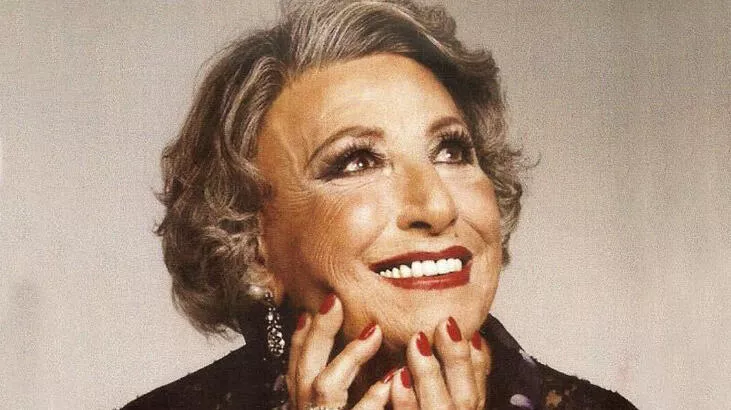
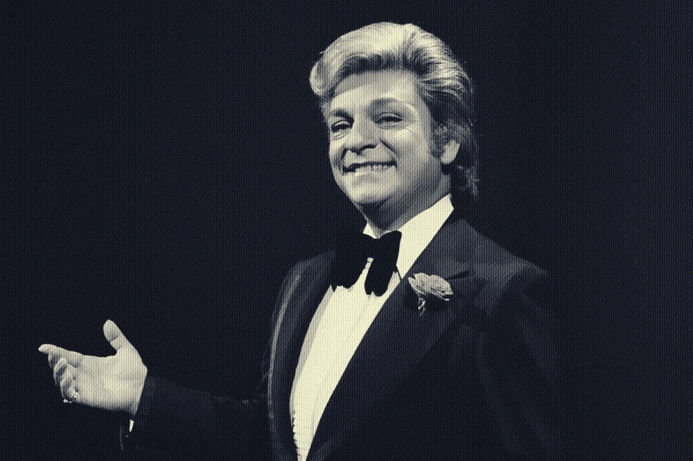

Pop müzik şarkılarında kafiyeli sözlere, sürekli tekrarlanan ezgilere ve yüksek bir tempoya sıklıkla yer veriliyor. Şarkıların dinleyicinin diline takılması için bu noktalara özellikle dikkat ediliyor. Pop müzik şarkılarının sözleri, ağırlıklı olarak aşk, ikili ilişkiler ya da kişisel zaferler temalarını işliyor.
Cumhuriyetin Divası... Sesiyle her iki yüzyılı da büyüleyen, kimi zaman aşkı, kimi zaman hüznü, kimi zaman coşkuyu en özgün şekilde yorumlayan büyük ses...
Sanat Güneşi, Müziğin Paşası... Türkiye'de cinsel tercihini saklama gereği duymayarak büyük cesaret göstermiş; ama daha önemlisi sanatıyla herkesi kendine hayran bırakmayı başarmıştır...
Geçilen yüzyılın son otuz yılında üne kavuşan, sanat müziğine kibar sesiyle, televizyon ekranlarına güzel elleriyle damgasını vuran sanatçı...